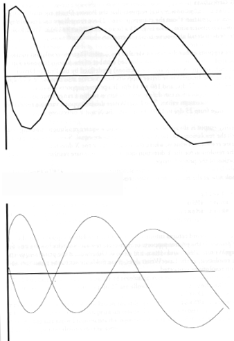
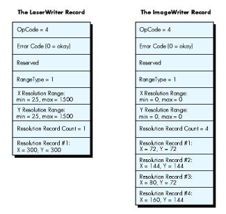
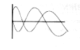

The Printing Manager has been expanded and enhanced by the addition of the trap
PrGeneral. This little-known trap-- available in ImageWriter® driver versions 2.5
and later, and LaserWriter ® driver versions 4.0 and later--can pass five operation
codes that solve special problems and improve a printer's performance. This article
describes the trap and its opcodes. The accompanying sample application on the
Developer Essentials disc enables you to experiment with the opcodes as you print
images we provide.
The little-known trap PrGeneral, through its five operation codes, can give your
application the ability to achieve highest-resolution print output, verify page
orientation, and increase performance by avoiding the need to spool. These
enhancements to the Printing Manager come in handy in a variety of situations.
The sample application PrGeneral Play lets you print images with and without the
PrGeneral opcodes. That way you can compare the images and see for yourself the
effects of the opcodes. We'll look at fragments of the sample application in the course of
this article.
PrGeneral is a multipurpose call that can perform a number of different functions,
depending on the opcode used with it. PrGeneral currently can pass five
opcodes:GetRslData, SetRsl, GetRotn,DraftBits, andNoDraftBits.
PrGeneral is declared like this in C:
pascal void PrGeneral (Ptr pData);
The pData parameter is a pointer to a record called TGnlData. The first eight bytes
comprise a header shared by all the PrGeneral calls:
struct TGnlData {
short iOpCode;
short iError;
long lReserved;
};
The first field in the record,iOpCode, contains the opcode that is passed through the call
toPrGeneral to obtain the requested feature. The second field,iError, contains the
result code returned by the call toPrGeneral. The final field,lReserved, is reserved
for future use by the Printing Manager and/or the Printer Driver. Additional fields
followlReserved, depending on the opcode that is used.
After each call to PrGeneral, your application should check the value in the iError
field. Three possible result codes can be returned:
#define noErr 0 /* You've seen this one before. */ #define NoSuchRsl 1 /* Only defined for PrGeneral. */ #define OpNotImpl 2 /* Only defined for PrGeneral. */
If PrGeneral accomplishes your request, it returns noErr in the iErrorfield. If you
request a resolution that is not supported by the currently selected printer, the call to
PrGeneral returns theNoSuchRsl error code. Finally, some printer drivers might not
support one of the opcodes described here, in which case the call toPrGeneral returns
the OpNotImpl error code. ImageWriter driver versions 2.5 and later, and
LaserWriter driver versions 4.0 and later support all of the PrGeneral opcodes.
Your application should also check PrError (which returns the result code left by the
last Printing Manager routine) after checking iError, to be sure that no additional
error was generated by the Printing Manager or the Printer Driver. See Technical
Note #72, Optimizing for the LaserWriter, for a complete list of the possible result
codes returned by the Printing Manager or the LaserWriter driver.
If resNotFound is returned by PrError, then the current Printer Driver doesn't
support PrGeneral. This shouldn't be a major problem for your application, but your
application must be prepared to deal with this error. If you do receive the resNotFound
error back from PrError, you should clear the error with PrSetError(0);
otherwise, PrError might still contain this error the next time you check it.
If an error is returned by PrError, be sure that all of the Printing Manager calls
receive theircorresponding close calls before you report the error to the user. This
enables the Printing Manager and the Printer Driver to clean up their worlds before
you exit. See Technical Note #161, When to Call PrOpen and PrClose, for a
demonstration of the technique.
If noErr is returned by PrError, you can then proceed.
Your application can use theSetRsl opcode to set print resolution to the highest
supported resolution of the current printer. But before doing this, it needs to
determine the resolutions supported by the current printer, using theGetRslData
opcode. The data returned byGetRslDatais essential because there are now over 50
different models of printers that can be connected to the Mac, each with its own unique
imaging capabilities. GetRslDatasaves your application from having to make
assumptions about which resolution would or would not work.
To illustrate the benefits of setting print resolution to the highest supported
resolution of the current device, let's compare the two graphs shown in Figures 1 and
2, printed on a LaserWriter II/NTX.
As you can see, the results without using SetRsl are not too impressive. (The graph is
printed at 72 dpi.) The same graph printed using SetRsl looks quite a bit better. (The
graph is printed at 300 dpi.) You can demonstrate the effects of using SetRsl for
yourself with the sample application PrGeneralPlay on the Developer Essentials disc.

Figure 1 A Graph Printed Without Using SetRsl
Figure 2 The Same Graph Printed Using SetRsl
USING GETRSLDATA
GetRslData (iOpCode = 4) requests that the Printer Driver return resolution
information about the current printer. Three records are used to convey the resolution
information: TRslRg, TRslRec, andTGetRslBlk. We'll look at these records in detail
after some basic information about resolution.
A printer supports either discrete or variable resolution. Discrete resolution means
that the application can choose from a limited number of resolutions (expressed in
dots per inch, or dpi, in the X and Y directions) predefined by the Printer Driver. For
example, the ImageWriter driver supports four discrete resolutions: 72 x 72 dpi,
144 x 144 dpi, 80 x 72 dpi, and 160 x 144 dpi. If a printer supports variable
resolution, the application can define any resolution within a range bounded by
minimum and maximum values. The LaserWriter driver supports variable resolution
within a range from 25 dpi to 1500 dpi in both the X and Y directions.
Best quality output is always obtained by choosing a square resolution, meaning one in
which the resolutions for the X and Y directions are equal. Some devices support
nonsquare resolutions-that is, where the resolution for the X direction does not equal
the resolution for the Y direction-but using a nonsquare resolution will result in
distortion of the printed image.
Let's look now at the records that convey resolution information.
struct TRslRg {
short iMin;
short iMax;
};
The TRslRg record returns information about the resolution supported by the current
printer. If the printer supports only discrete resolutions, which is the case for the
ImageWriter, iMin and iMax are set to 0. Otherwise, if the printer supports variable
resolution, as the LaserWriter does, these fields are set to the minimum and maximum
resolutions supported.struct
TRslRec {
short iXRsl;
short iYRsl;
};
The TRslRec record specifies a discrete resolution supported by the printer. The iXRsl
field specifies the discrete resolution for the X direction, and iYRsl for the Y direction.
A printer driver can have up to 27 separate TRslRec resolution records. The
ImageWriter driver contains 4 such records, which are returned when you use the
GetRslData opcode. In this case, your application will need to choose one of these
records to be used by SetRsl. Our application PrGeneral Play when printing to an
ImageWriter uses the highest square resolution that the ImageWriter supports, which
is 144 x 144 dpi.
struct TGetRslBlk {
short iOpCode;
short iError;
long lReserved;
short iRgType;
TRslRg xRslRg;
TRslRg yRslRg;
short iRslRecCnt;
TRslRec rgRslRec[27];
};
The TGetRslBlk record is the complete structure passed to PrGeneral when using the
GetRsl opcode. It contains the iOpCode, iError, and lReserved fields, which we've
already discussed, plus some others.
iRgType is a version number returned by the Printer Driver. The version number is
all your application needs to determine that a particular set of functionality is or is
not present. The LaserWriter and the ImageWriter will always return 1. If it's not 1,
don't use the data.
xRslRg and yRslRg are the resolution ranges supported for the X and Y directions by a
variable- resolution printer. If the current printer doesn't support variable
resolution, the value in these fields is 0.
iRslRecCnt returns the number of resolution records used by a particular printer
driver. As mentioned earlier, up to 27 are allowed.
rgRslRec is an array of resolution records, each specifying a discrete resolution at
which the current printer can print an image. In the arrays returned by Apple printer
drivers, the last record represents the highest supported resolution. We recommend
that other printer drivers do the same.
The records shown in Figure 3 are returned by PrGeneral for the LaserWriter and the
ImageWriter, respectively.

Figure 3 The Records for the LaserWriter and the ImageWriter
Note that in the LaserWriter record, the resolution range shown is 25 through 1500
dpi. Inside Macintosh , volume V, page 413, shows the minimum value as 72; this is
an error. And although up to 1500 dpi is supported by the Printer Driver, the device
itself is only capable of a maximum resolution of 300 x 300 dpi. Accordingly, the
single resolution record indicates that the printer will only support a maximum
resolution of 300 x 300 dpi. Other devices can achieve higher resolutions, up to the
maximum supported by the driver.
In the ImageWriter record, all the resolution range values are 0, because the printer
only supports discrete resolutions. The four resolution records returned give your
application the option to choose one of these discrete resolutions. Note that the highest
supported resolution is represented by the last record.
USING SETRSL SetRsl (iOpcode = 5) tells the Printer Driver the desired imaging
resolution requested by the application. The contents of the record are as follows:
struct TSetRslBlk {
short iOpCode;
short iError;
long lReserved;
THPrint hPrint;
short iXRsl;
short iYRsl;
};
We have already discussed the iOpCode, iError, and lReserved fields, so we'll start
with the hPrint field. hPrint contains a handle to a print record that has previously
been created and passed through PrDefault to make sure that all of the information
contained in the handle is good. If you are using a print record that was saved as a
resource, you will want to call PrValidate on it to make sure that the contents of the
handle will work with the current version of the Printing Manager and the printer
driver. Because the SetRsl opcode may require the Printer Driver to change the
appearance of the style and/or job dialogs, we want to determine and set the resolution
before the print dialogs are presented to the user. This is why we need a good
handle--the same handle that is passed to the dialogs.
The iXRsl and iYRsl fields contain the resolutions that you would like the Printer
Driver to image with. If iError returns a value of 0 (noErr), the print record will be
updated with this new resolution, which can be used at print time. If the requested
resolution isn't supported by the current printer, iError will return NoSuchRsl, and
the printer driver will revert to the previous setting.
You can undo a previous call to PrGeneral with the SetRsl opcode, by calling PrGeneral
with theSetRsl opcode again, this time with the original resolutions used by the
Printer Driver before your call to SetRsl. (Inside Macintosh, volume V, page 414,
suggests making another call that specifies an unsupported resolution, such as 0 x 0.
This doesn't work.) If you save the resolutions contained in the iVRes and iHRes fields
of the TPrinfo record, you can then pass these values in the iXRsl and iYRsl fields of
the TSetRslBlk record, and the next time you call PrGeneral with the SetRsl opcode,
your resolution for the current printer will be back to its default setting. You can also
call PrintDefault on the print record passed to the call to PrGeneral with the SetRsl
opcode. This definitely works, but it loses all of the user's selections from her or his
last trip to the style dialog, which is not very user-friendly!
Note that if the resolution is set to greater than 600 x 600, then the LaserWriter
driver limits the reduction factor to 60 percent--that is, it will not allow you to go
below that. This is done so that the page rect/paper rect coordinates fit within 16-bit
signed integers.
GETRSLDATA AND SETRSL IN ACTION
The following code fragment from our sample application PrGeneral Play uses the
GetRslData opcode of PrGeneral to find the highest square resolution supported by the
current printer. It then sets the resolution with SetRsl. Note that for simplicity this
code fragment and others in this article assume that PrGeneral and the particular
opcode are supported. PrGeneral Play checks for PrGeneral and the opcode before using
them.
int SetMaxResolution (thePrRecHdl)
THPrint thePrRecHdl;
{
int maxDPI = 0,
resIndex;
TGetRslBlk getResRec;
TSetRslBlk setResRec;
getResRec.iOpCode = getRslDataOp;
PrGeneral ((Ptr)(&getResRec));
/* At this point, we have an array of possible resolutions.
After checking for errors, we loop through each resolution
range record looking for the highest resolution available,
where x and y are equal. This loop makes no assumptions
about the order of the resolution records. */
if (getResRec.iError == noErr && PrError() == noErr)
{
for (resIndex = 0; resIndex < getResRec.iRslRecCnt;
resIndex++)
{
if ( getResRec.rgRslRec[resIndex].iXRsl ==
getResRec.rgRslRec[resIndex].iYRsl &&
getResRec.rgRslRec[resIndex].iXRsl > max DPI)
maxDPI = getResRec.rgRslRec[resIndex].iYRsl;
}
/* We now have the desired resolution. If it is not zero,
we use SetRsl to set it. */
if (maxDPI != 0)
{
setResRec.iOpCode = setRslOp;
setResRec.hPrint = thePrRecHdl;
setResRec.iXRsl = maxDPI;
setResRec.iYRsl = maxDPI;
PrGeneral ((Ptr)(&setResRec));
}
if (setResRec.iError == noErr && PrError() == noErr
&& maxDPI != 0)
return (maxDPI);
}
else return (0);
}
Now that the resolution has been set to the highest supported resolution of the current
device, what about drawing objects? In the case of the LaserWriter, because the
printer supports a physical resolution that is roughly four times higher than the
screen's, your printing grafPort is now four times bigger than a standard printing
grafPort. If you do not compensate for this change, your objects will be printed at
micro size, as illustrated in Figure 4.

Figure 4 A Graph Printed Without Correct Scaling
You should scale all of your objects bigger by the scale factor arrived at by dividing
your device resolution by your screen resolution. In the case of the LaserWriter, all of
your objects, plus coordinates and font sizes, should be scaled roughly four times
bigger than their original size.
The following code fragment from our sample program demonstrates this scaling idea:
deviceRes = SetMaxResolution (thePrRec);
Upon our return from using SetMaxResolution, we receive the highest resolution
supported by the current printer. We can now determine the scaling factor:
if (deviceRes != 0) scale = deviceRes / MacScreenRes;
If the device resolution is 0, we assume that all drawing will occur at the Macintosh
computer's screen resolution of 72 dpi. The value of scale was originally set at 1 when
it was declared, thereby preventing problems that might otherwise occur if
theSetRslcall fails or the driver does not support theGetRslDataor SetRslopcodes.
We then draw all of our objects bigger as specified by the scaling factor. For example:
TextSize (FontSize * scale);
At times it can be very useful for your application to be able to determine which page
orientation the user has selected in the style dialog. For instance, if the user has not
selected landscape orientation, and an image will only fit on a page when printed in
landscape orientation, your application can remind the user to select this orientation
to print the image. Otherwise, the user will get a clipped image.
GetRotn (iOpcode = 8 ) enables your application to determine if the user has selected
the landscape orientation in the style dialog. This opcode should be used after the style
dialog has been presented. At this point, if landscape orientation has not been selected
but would give the best printed results for the current image, you can present a dialog
that asks if the user wants to select landscape orientation. If the answer is yes, you
should close up the print loop and start the process over again. If the answer is no, you
can then proceed with printing the image.
GetRotn has been implemented in the ImageWriter and LaserWriter drivers. Here are
the contents of the record:
struct TGetRotnBlk {
short iOpCode;
short iError;
long lReserved;
THPrint hPrint;
Boolean fLandscape;
char bXtra;
};
If the landscape orientation has been selected by the user in the style dialog, then
fLandscape is true. The final field in this record, bXtra, is reserved for future use by
the Printing Manager and/or the Printer Driver.The following code fragment from our
sample program uses theGetRotn opcode to determine if the user has selected landscape
orientation from the style dialog:
Boolean IsLandscapeModeSet (thePrRecHdl)
THPrint thePrRecHdl;
{
TGetRotnBlk GetRotRec;
GetRotRec.iOpCode = getRotnOp;
GetRotRec.hPrint = thePrRecHdl;
PrGeneral ((Ptr) &GetRotRec);
/* We now have the result from our call to PrGeneral, but we
check all known errors to make sure that PrGeneral was
successful and no errors have been encountered from printing
land. */
if (GetRotRec.iError == noErr && PrError() == noErr
&& GetRotRec.fLandscape)
return (true);
else return (false);
}
If your application needs to print only text or bitmaps, it can increase performance
and save disk space by printing in draft mode. DraftBits(iOpcode = 6) forces draft
printing. This means that the document will be printed immediately, rather than
spooled to disk, as in spool printing. In the latter mode, the Printing Manager writes
out a representation of the document's printed image to a disk file; this information is
then converted into a bit image and printed. On the ImageWriter, draft printing is used
to print quick, low-quality drafts; spool printing is used for standard or high-quality
printing. The LaserWriter always prints in draft mode.
With DraftBits, you can print bitmaps via calls to CopyBits. (Normally, in draft mode,
bitmaps and pixel maps are ignored.) Note, though, that the landscape orientation is
not available when printing with DraftBits; and this opcode does not have any effect if
the printer only prints in draft mode (like the LaserWriter), does not support draft
printing, or does not print bitmaps.Here are the contents of the record:
struct TDftBitsBlk {
short iOpCode;
short iError;
long lReserved;
THPrint hPrint;
};
We've already discussed the iOpCode, iError, and lReserved fields. The hPrint field is
discussed in the section on using SetRsl.
Using this opcode may require the Printer Driver to change the appearance of the style
and jobdialogs. In the case of the ImageWriter, using theDraftBitsopcode before
presenting the dialogs to the user disables the landscape icon in the style dialog, and
the Best and Faster options in the job dialog. The DraftBitsopcode can also be used
after the call to the job dialog, to give users the choice of print quality without forcing
draft printing on them, but if the user chooses draft printing from the job dialog, this
will prevent the printing of any bitmaps or pixel maps in the document. Therefore,
you may prefer to useDraftBitsbefore presenting the dialogs.
You should keep one additional point in mind when using theDraftBitsopcode: all of the
data that is printed must be Y-sorted, because reverse paper motion is not possible on
the printer when printing your image in draft mode. This means that you cannot print
two objects side by side. That is, the top boundary of an object cannot be higher than
the bottom boundary of the previous object. If you violate this requirement, you will
get some extremely undesirable results. To get around this restriction, you should sort
your objects before print time.
This code fragment from our sample program demonstrates the use of the DraftBits
opcode to force immediate draft printing:
THPrint doDraftBits (thePrRecHdl)
THPrint thePrRecHdl;
{
TDftBitsBlk draftBitsBlk;
draftBitsBlk.iOpCode = draftBitsOp;
draftBitsBlk.hPrint = thePrRecHdl;
PrGeneral(&draftBitsBlk);
if ((PrError() == noErr) &&
(draftBitsBlk.iError == noErr))
return (true)
else return (false)
}
At this point, the code returns the result to the calling function. If DraftBits was set
without any problems, we return true. Otherwise, an error occurred and we return
false.
You use the NoDraftBits opcode to turn off the DraftBits opcode. The contents of the
record are the same as for DraftBits. If you call NoDraftBits without first calling
DraftBits, this opcode does nothing.
Here is a code fragment from our program that uses the NoDraftBits opcode to turn off
draft printing:
HPrint doNODraftBits (thePrRecHdl)
THPrint thePrRecHdl;
{
TDftBitsBlk draftBitsBlk;
draftBitsBlk.iOpCode = nodraftBitsOp;
draftBitsBlk.hPrint = thePrRecHdl;
PrGeneral(&draftBitsBlk);
if ((PrError() == noErr) &&
(draftBitsBlk.iError == noErr))
return (true) /* DraftBits is on. */
else return (false) /* DraftBits is NOT on. */
}
At this point, the code returns the result to the calling function. If NoDraftBits was set
without any problems, we return true. Otherwise, an error occurred and we return
false.
We have looked at the five opcodes currently available in the PrGeneral trap.
GetRslData and SetRsl are used to determine and set the resolution of the printer, thus
enabling your application to achieve highest-resolution output. GetRotn enables your
application to determine if the landscape orientation has been selected in the style
dialog. DraftBits is used to force draft printing, thus avoiding the need for spooling,
while also enabling printing of bitmaps and pixel maps; andNoDraftBits cancels the
effect of DraftBits.
In review, here are the things you should always keep in mind when using the
PrGeneral trap:
To reinforce what you've learned here, you can experiment with PrGeneral by
printing images with the PrGeneral Play program on the Developer Essentials disc.
PETE "LUKE" ALEXANDER loves technical support for printing because it's "hard,
ugly, and kinda sick." He earned his middle name while using The Force to feel his way
through the stickier parts of the art. Naturally, he feels quite at home with light
sabers. He's been at Apple for two years, after doing a brief stint at a company he won't
name (hint: BLUE). He's a born-and-bred Silicon Valley boy. He rides mountain bikes,
sails a 16-foot Hobie Cat, and chuckles over Calvin and Hobbes. He loves to get
high--30,000 feet to be exact, in an airplane without an engine (read: glider). He
established a few records for that possibly unequaled but arguably looney feat. If he
ever asks you if you need a ride, please think twice, and if you say yes, may The Force
be with you. *
Thanks to Our Technical Reviewers: Jay Patel, Larry Rosenstein, Scott "ZZ"
Zimmerman